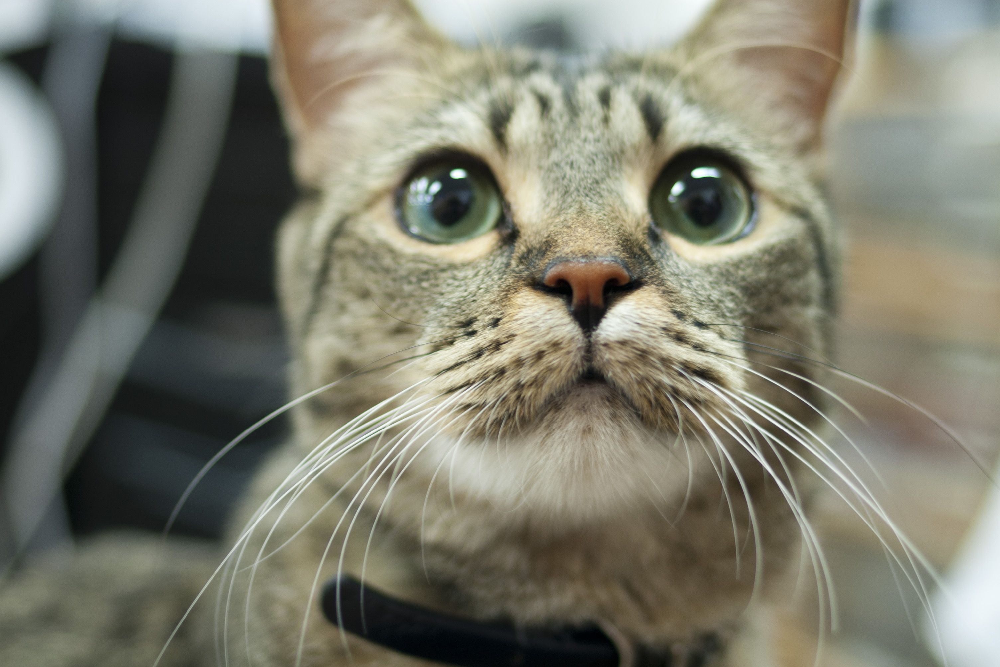

어떤 사람들은 국내 길고양이를 "코리안 쇼트헤어"나 줄임말인 "코숏"이라 부르기도 한다. 그러나 이는 품종명이 아니라 한국의 애묘인들이 길고양이를 일컬어 부르는 애칭이다. 고양이가 새겨진 가야 토기의 발견으로 5~6 세기에는 이미 반려동물로 기르고 있었음을 알 수 있다. 민화에도 등장하며, 조선시대 숙종에 의해 왕실에서도 길러졌다.
코리안 쇼트헤어는 뚜렷하거나 일치하는 유전적인 특징이 발현되지 않는다. 버려지거나 가출한 고양이들끼리 자유로이 교미하여 태어나 러시안 블루나 시암고양이 같은 품종묘처럼 일정한 털무늬를 보이지 않는다. 현재 국내 길고양이 중 가장 많은 분포를 보이는 무늬로는 고동색 줄무늬, 갈색(혹은 검은색)과 노랑 하양 등의 색이 나타나는. 삼색 고양이, 노란색 줄무늬, 목·배·발·머리·꼬리등 몸의 일부를 제외한 나머지 부분이 검은색인 무늬, 검정색과 하얀색이 섞여 있는데 하얀색 비율이 더 큰 "젖소"무늬가 있다. 한국에서는 길고양이가 전체 고양이의 3분의 2정도를 차지하고 있다.